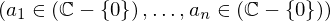
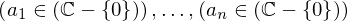
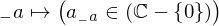
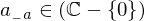
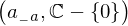

Expression of type And¶
from the theory of proveit.numbers.multiplication¶
In [1]:
import proveit
# Automation is not needed when building an expression:
proveit.defaults.automation = False # This will speed things up.
proveit.defaults.inline_pngs = False # Makes files smaller.
%load_expr # Load the stored expression as 'stored_expr'
# import Expression classes needed to build the expression
from proveit import ExprRange, IndexedVar, Variable, a, n
from proveit.logic import And, InSet
from proveit.numbers import ComplexSansZero, one
In [2]:
# build up the expression from sub-expressions
sub_expr1 = Variable("_a", latex_format = r"{_{-}a}")
expr = And(ExprRange(sub_expr1, InSet(IndexedVar(a, sub_expr1), ComplexSansZero), one, n))
Out[2]:
In [3]:
# check that the built expression is the same as the stored expression
assert expr == stored_expr
assert expr._style_id == stored_expr._style_id
print("Passed sanity check: expr matches stored_expr")
In [4]:
# Show the LaTeX representation of the expression for convenience if you need it.
print(expr.latex())
In [5]:
expr.style_options()
Out[5]:
In [6]:
# display the expression information
expr.expr_info()
Out[6]:
| core type | sub-expressions | expression | |
|---|---|---|---|
| 0 | Operation | operator: 1 operands: 2 | |
| 1 | Literal |  | |
| 2 | ExprTuple | 3 |  |
| 3 | ExprRange | lambda_map: 4 start_index: 5 end_index: 6 |  |
| 4 | Lambda | parameter: 16 body: 7 |  |
| 5 | Literal |  | |
| 6 | Variable |  | |
| 7 | Operation | operator: 8 operands: 9 |  |
| 8 | Literal |  | |
| 9 | ExprTuple | 10, 11 |  |
| 10 | IndexedVar | variable: 12 index: 16 |  |
| 11 | Operation | operator: 14 operands: 15 |  |
| 12 | Variable |  | |
| 13 | ExprTuple | 16 |  |
| 14 | Literal |  | |
| 15 | ExprTuple | 17, 18 |  |
| 16 | Variable |  | |
| 17 | Literal | ||
| 18 | Operation | operator: 19 operand: 21 |  |
| 19 | Literal |  | |
| 20 | ExprTuple | 21 |  |
| 21 | Literal |  |